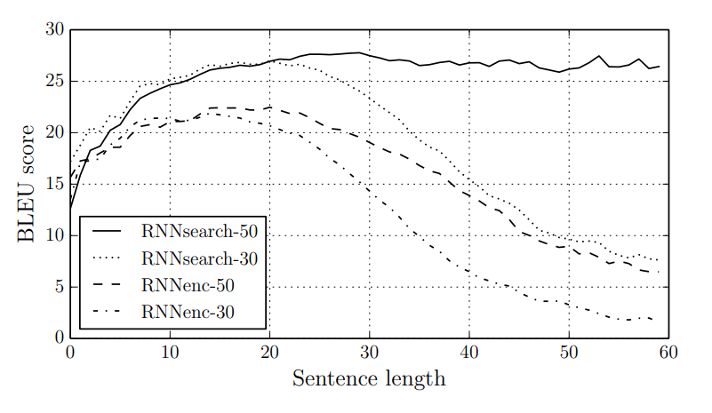
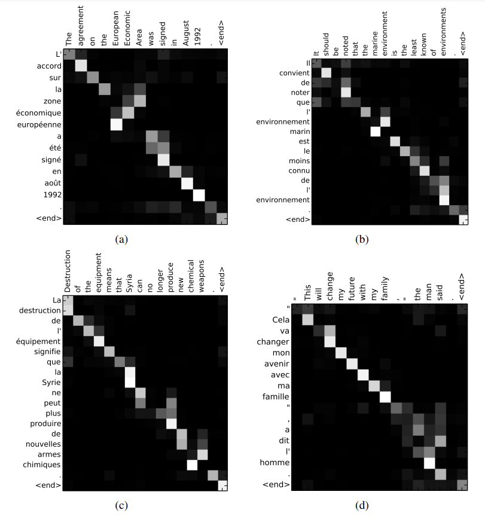

Introduction
- 당시 인공신경망을 활용한 기계번역에서는 대부분
encoder와decoder를 포함한 모델을 사용했습니다 - 이러한 모델은
고정된 길이의context vector를 사용하여 길이가 긴 문장에서 성능저하를 가져왔습니다. - 따라서 논문에서는 각각의
target world에 대해 서로다른context vector를 사용함으로서 길이가 긴 문장에 대한 성능저하를 개선합니다. - 이러한 새로운 접근 방식을 통해 그 당시의 state of the art인 phrase-based system과 비슷한 번역 성능을 달성했습니다.
Problem Setting

- 기존의 RNN기반의 seq2seq모델은
source sentence가encoder를 통과하여 고정된 크기의context vector가 되고 이를decoder의 초기hidden state사용되어output sequence를 출력하는 구조를 가졌었습니다. - 이러한 구조는 어떤 문장이던지 고정된 길이의
context vecotr로 변환되야 하는 구조적 한계때문에 길이가 긴 문장에서 정보를 과도하게 소실,축소,누락시켰으며 결과적으로 긴 문장에서의 성능저하를 가져왔습니다.
Background
- 확률론의 관점에서 번역은 source sentence \(\bf{x}\)가 주어졌을때 target sentence \(\bf{y}\)에 대한 conditional probability를 maximize하는 \(\bf{y}\)를 찾는 것과 같습니다.
\[\hat{\bf{y}} = \underset{\bf{y}}{\text{argmax}}\,p({\bf{y|x}})\]
- chain rule에 의해 \(p(\bf{y|x})\)는 다음과 같습니다.
- 기존의 seq2seq 모델에서 잘 학습된 decoder에서는 각 time step \(t\)마다 chainrule에서 연쇄적으로 곱하는 conditional probability를 구할 수 있습니다. 즉, 다음과 같습니다.
- 지난번 리뷰했던 seq2seq논문의 경우 \(q(\{h_1,\dots,h_T\}) = h_T\)였습니다.
Method
Intuition

출처 : paper-Figure1
- 위의 그림은 논문에서 제시한 모델로 위는 decoder 아래는 encoder입니다.
decoder를 보면 기존의 seq2seq 아키텍쳐와 다를것이 거의 없습니다만 새로운 정보(휘어져 들어가는 화살표) 들어가며 이는 그림의 아래쪽에 있는 encoder에서 만들어짐을 알 수 있습니다.encoder는 bidirectional RNN을 사용합니다. 정방향과 역방향으로 읽어들이면서 input sequence에 대해 전체적이면서도 특히 i-th 단어(토큰)과 연관된 정보 \(h_t\)를 만듭니다.- 이렇게 만들어진 input sequence의 각 시점에서의 정보는 각각의 target을 만드는데 얼마나 중요한 정보인지를 의미하는 값인 \(\alpha\)와 곱하여 모두 더해집니다.
- 즉, 더해진 값은 input sequence에서 모든 정보를 target을 예측하는데 얼마나 중요한지,관련있는지를 고려해서 재조합한 새로운 정보라고 할 수 있습니다. 이렇게 더해진 값은 새로운 출력값 \(y_t\)를 만들기 위한 정보인 decoder의 hidden state \(s_t\)를 구하는데 사용됩니다.
양방향 vs 단방향 RNN
직관적인 정리
Modeling
Decoder
- 위와 같은 새로운모델에서 chainrule에서 각각의 conditional probability는 다음과 같습니다.
- 기존의 seq2seq모델에서는 context vector \(c\)는 target \(y_i\)가 바뀌어도 고정된 바뀌지 않는 값이었습니다.
- 논문에서 제시된 모델은 이와는 다르게 각각의 target \(y_i\)를 계산하기 위해서 서로다른
context vector\(c_i\)를 사용합니다. - 여기서 \(c_i\)는 decoder의 hidden state인 \(s_{i}\)를 계산하기 위해서 사용됩니다. 즉,다음과 같습니다.
\[s_i = f(s_{i-1},y_{i-1},c_i)\]
- \(c_i\)는 target \(y_i\)를 예측하기 위해서 input sequence에서 나온 정보 \(h\)를 중요도 \(a\)에 따라 재조합한 정보입니다. 구체적으로 다음과 같습니다.
각각의 annotation 즉 hidden state \(h_j\)는 전체문장의 정보를 담고 있으나 특히 \(j\)번째 poistion근처의 문맥정보를 많이 담고 있습니다.(bidirectional RNN에 의한 결과입니다.)
참고 - \(i\)값이 바뀌더라도 즉, 또 다른 target을 예측하더라도 참고하는 input sequence의 정보인 annotations는 바뀌지 않음(저장해놨다가 각각의 \(y_i\)값을 구하는데 사용할 수 있음,구현시 유의)
각각의 가중치 \(\alpha\)는 다음과 같이 계산할 수 있습니다.
- \(\alpha\)는 softmax의 함숫값이며 \(e\)를 0과1사이의 값으로 scailing 했음을 알 수 있습니다.
- 여기서 \(a\)는 alignment model로 input sequence의 j번째 position과 output sequence의 i번째 position이 얼마나 일치하는지,연관되어있는지,관련있는지 알려주는 값이며 이는 feedforward nueral network로부터 계산됩니다.
- 이와같이 (soft)alignment(일치,정렬)를 직접적으로 계산함으로서 alignment가 잠재적(보이지않던,숨겨져있었던)이었던 기존의 기계번역 모델들과는 다르게 alignment를 더 잘 학습하도록 gradient가 backpropagation 될 수 있으며 따라서 input과 output sequnce에서의 alignment를 기존모델보다 더 잘 학습할 수 있습니다.
Encoder
인코더에서는 정방향,역방향으로 input sequence를 모두 읽어들이는 bidirectional RNN을 사용합니다.
forward RNN \(\overset{\rightarrow}{f}\)은 \(x_1\)에서 \(x_{T_x}\)까지 forward hidden states인 \((\overset{\rightarrow}{h_1},\dots,\overset{\rightarrow}{h_{T_x}})\)를 계산합니다.
backward RNN \(\overset{\leftarrow}{f}\)은 \(x_{T_x}\)에서 \(x_1\)까지 bacward hidden states인 \((\overset{\leftarrow}{h_{T_x}},\dots,\overset{\leftarrow}{h_{T_1}})\)을 계산합니다.
양방향,정방향의 hidden state를 모두 결합하여 다음과 같은 결합된 hidden state값을 계산합니다. \[h_j = \left[\overset{\rightarrow}{h}_j^{\,\,T};\overset{\leftarrow}{h}_j^{\,\,T}\right]^T\]
\(h_j\)는 input sequence 전체의 정보를 모두 갖지만 특히 position j근처에 집중된 정보를 가집니다.
Experiments

출처 : paper-figure2
- RNNenc는 기존모델 RNNsearch는 논문에서 제안한 모델입니다.
- \(-50\)은 최대 문장의 길이가 \(50\)인 데이터셋으로 학습시킨 모델을 의미합니다.
- RNNsearch가 RNNenc의 성능보다 높음을 알 수 있습니다.(심지어 RNNenc-50보다 RNNsearch-30이 더 높아요.)
- RNNsearch가 길이가 더 긴 문장에 robust한 모델이며 특히 RNNsearch-50은 긴 문장에 대해서 성능이 월등히 좋음을 알 수 있습니다.

We can see from the alignments in Fig. 3 that the alignment of words between English and French is largely monotonic. We see strong weights along the diagonal of each matrix. However, we also observe a number of non-trivial, non-monotonic alignments. Adjectives and nouns are typically ordered differently between French and English, and we see an example in Fig. 3 (a). From this figure, we see that the model correctly translates a phrase [European Economic Area] into [zone economique europ ´ een]. The RNNsearch was able to correctly align [zone] with [Area], jumping ´ over the two words ([European] and [Economic]), and then looked one word back at a time to complete the whole phrase [zone economique europ ´ eenne].
- 위의 그림은 가중치 \(\alpha\)값을 나타냅니다.
- 그림을 보면 주대각선의 값이 대부분 큰 것으로 보아 영어와 프랑스어 단어사이의 alingment(일치)는 대부분 단조로움(monotonic)을 알 수 있습니다.
- 이는 실제로 영어와 프랑스어 사이의 어순이 대부분 일치한다는 사실로 보아 직관적인 사실입니다.
- 그러나 그렇지 않은 경우도 있습니다. 형용사,명사의 경우에는 두 언어 사이에 어순의 차이가 존재합니다.
- 이렇게 어순의 차이가 있는 경우에도 마찬가지로 제시된 모델에서는 올바르게 alignment시킴을 알 수 있습니다.
- 예를 들어 figure3에서 [European Economic Area]는 [zone economique europ´een]로 번역이 됨을 확인할 수 있습니다.
- 이는 zone이라는 단어가 어순의 차이가 있기에 두 단어를 뛰어넘어서 Area를 올바르게 alignment했음을 알 수 있습니다.(또한 나머지 단어들도 되돌아가서 올바르게 align했음을 알 수 있어요.)
experiments detail
- RNNenc의 경우 encoder,decoder에 1000 hidden units인 RNN사용
- RNNsearch의 경우 encoder,decoder에 각각의 1000개의 hidden units을 가진 forward,backward(bidirectional) RNN을 사용했음
- RNNsearch,RNNenc 두 경우 모두 target word에 대한 conditional probability 계산을 위해 single maxout을 포함한 multilayer neural network를 사용함.
- SGD with Adadelta
- minibatch of 80 sentences
- beam search
Conclusion
- 당시의 인공신경망 기반 기계번역 모델은
encoder-decoder구조를 사용했으며 여기에는 고정된 크기의context vector에서정보의 손실이 일어난다는 문제가 있었습니다. - 따라서 각각의 target word를 생성할때 input sequence에서 나오는 각각의 모든 정보(hidden state)를 중요도에 따라서 재조합한 새로운 정보를 추가적으로 활용합니다.
- 이는 input sequence의 모든 정보를 고정된 크기의 context vector로 함축해야하는 부담을 줄여주며 동시에 target값을 생성하는데 필요한 input sequence의 특정한 정보에 집중(attention)할 수 있도록 합니다.
- 결과적으로 긴 문장에 대해서 좋은 결과를 보였으며 또한 기존의 모델과 다르게 alignment모델과 번역모델을 동시에 학습시킬 수 있었다는 점에서 긍정적입니다.